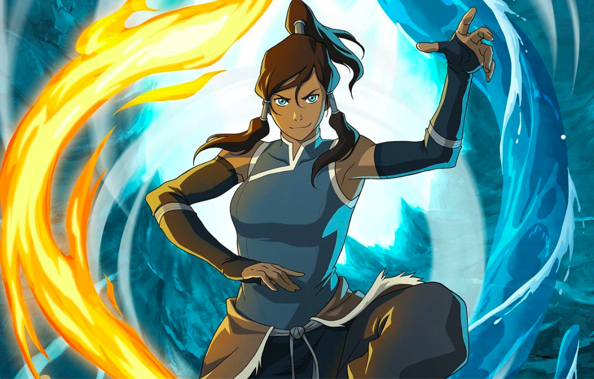

These are some of animation and video games that I enjoy watching and playing.
Many of theses are games and animation from recent years with the earliest one dating back to 1996.
Which one of these do you also like to watch?


My prediction is that in the future, more and more animation will adapt from video games and comics vice versa.
It has been a trend within the industry to adopt each other since the IP and brand recognition associated with one another has brought great success.
My hope is that I can also contribute to that process and bring the next wave of animation and narrative driven video games